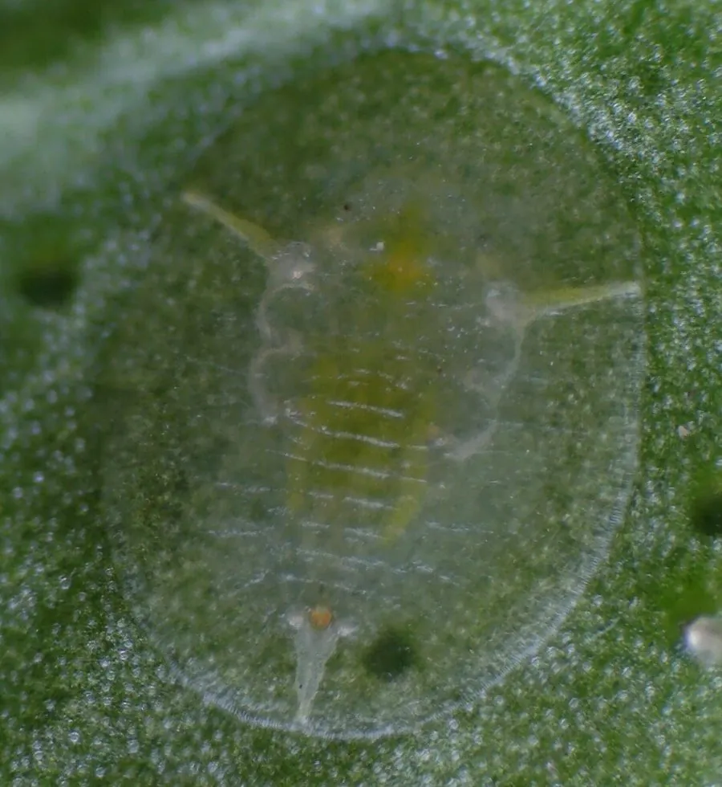

昆虫 · 动物界
柑橘粉虱 Dialeurodes citri

柑橘等果树上的小型白色粉虱，翅覆白色蜡粉，若虫固定在叶背吸汁，分泌蜜露诱发煤污病，是常见柑橘害虫。
- 分类
- 门节肢动物门纲昆虫纲目半翅目科粉虱科属裸粉虱属
- 栖息环境
- 柑橘园和庭院果树的叶背，以嫩叶和中下部叶片较多
- 地理分布
- 中国南方柑橘产区，以及日本、东南亚和北美等地
- 保护级别
- 暂无评估
物种志
柑橘粉虱成虫体长 1.0–1.3 mm，体色淡黄，全体覆盖白色蜡粉，翅白色不透明，停息时平展如小蛾。若虫体扁椭圆形，淡绿色，固定在叶背吸食，体表分泌白色蜡质和透明胶质，蜕皮后形成薄薄的介壳。
柑橘粉虱分布于中国南方柑橘产区以及日本、东南亚和北美等地，寄主包括柑橘、柚子、栀子、桂花和茶等。它一年发生 3–4 代，以若虫和蛹在叶背越冬，成虫多在清晨羽化，喜停息在嫩叶背面。若虫吸食汁液使叶片褪绿发黄，排泄的蜜露诱发煤污病，严重时枝叶发黑、果实品质下降。防治上可释放小黑瓢虫等天敌，并配合修剪通风、悬挂黄板诱杀成虫。目前它没有IUCN 的正式评估，也未列入中国国家重点保护野生动物名录。
形态与习性
- 食性若虫和成虫刺吸柑橘等植物叶片汁液
- 体长成虫 1.0–1.3 mm
- 生活史一年发生 3–4 代，以若虫和蛹在叶背越冬
- 危害叶片褪绿发黄，蜜露诱发煤污病
- 天敌小黑瓢虫、粉虱丽蚜小蜂等
- 防治修剪通风、黄板诱杀、释放天敌
趣味知识
- 柑橘粉虱的翅上覆盖白色蜡粉，停息时外形很像一只微小的白蛾。
- 它的若虫固定后终生不再移动，只把口针刺入叶肉吸食。
- 被寄生的粉虱若虫会变成黑色，是田间判断天敌作用的标志。